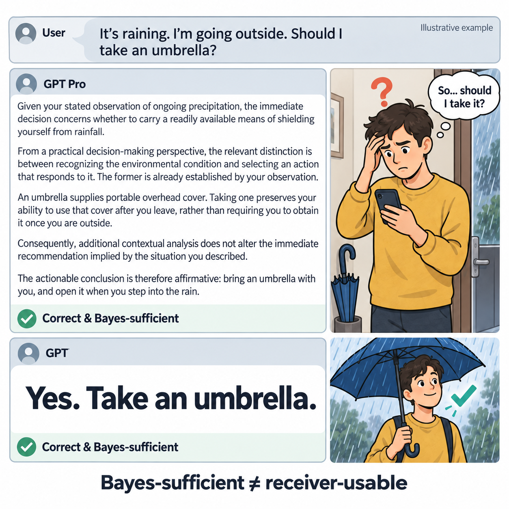
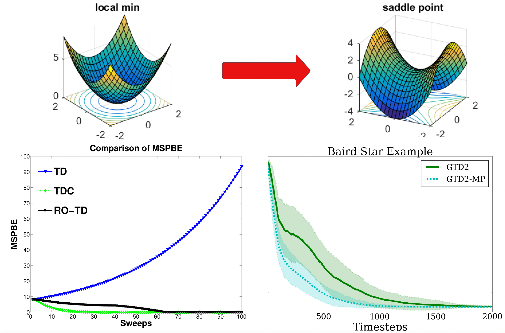
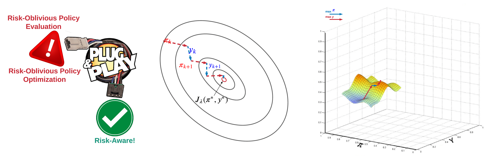
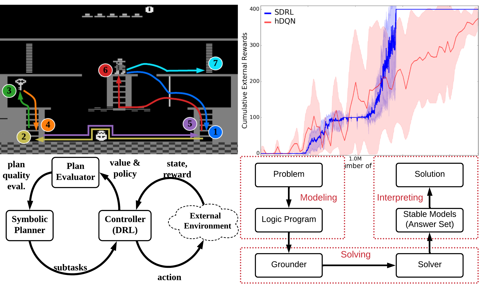
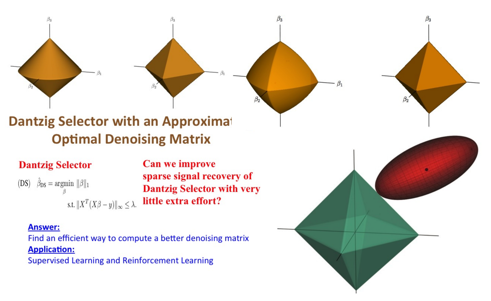

Selected Projects
I am interested in some fundamental problems of RL and AI, and fortunate enough to have some outcomes we are particularly proud of

Receiver-Usable Communication in Multi-Agent AI:
More information does not always lead to better decisions. Even a correct message
can fail if the receiving agent cannot easily use it. When should agents exchange
short messages, share the full context, or work independently? We study communication
through its effect on the receiver's next decision, accounting for both useful
information and the burden of processing it.
Technical contributions:
- A receiver-relative theory of communication that explains why Bayes-sufficient
compression can still fail for agents with bounded processing capabilities.
- A decomposition into externalization, absorption, and action closure to
distinguish missing information from failures to turn recovered information
into the correct action.
- An inference-time protocol selector, evaluated across six benchmark families,
that balances receiver gain, communication burden, and cost.
Publications:
[NeurIPS'2026: Bayes-Sufficient Compression Is Not Enough]
Codes:
[Evaluation artifacts]
Stable Training and Plug-and-Play Multi-Agent LLMs:
Can a team of smaller language models compete with a much larger model?
Training such teams is challenging: updating one agent changes the context seen
by the others, potentially disrupting coordination. Through Sequential Agent
Tuning (SAT) and TeamTR, we develop sequential training methods that control
these changes and support upgrading individual agents without retraining the
entire team.
Technical contributions:
- SAT: coordinator-free sequential agent tuning with sequence-aware advantage
estimation and per-agent KL trust regions, providing improvement bounds
and plug-and-play certificates under the stated assumptions.
- TeamTR: an analysis of compounding occupancy shift showing that, under the
paper's trust-region assumptions, fresh intermediate-policy evaluation
reduces the stale-occupancy penalty's dependence on team size from
quadratic to linear.
- Practical sequential fine-tuning with fresh rollouts and controlled agent
updates, evaluated on reasoning and planning tasks and component upgrades.
Publications:
[AAMAS'2026 (SAT)]
[ICML'2026 (TeamTR)]
Codes:
[SAT]
[TeamTR]

Counterfactual Prediction and Control: Humans and robots learn to perceive and interact with the world via real-time interactions. Can they do this not by real-time interactions but by learning only from past experiences? This is challenging since the past experience may be very different from the current scenario, which is termed "counterfactual."
Technical contributions:
Off-policy stable prediction algorithms in sequential decision-making and their sample complexity analysis.
Off-policy policy gradient theorem with function approximation and counterfactual density ratio estimation.
Publications:
[UAI'2015 best student paper award]
[IJCAI'2016]
[JAIR'2018]
[IEEE-TNN'2018]
[ICML'2020a (COFPAC)]
[ICML'2020b (GradientDICE)]
[AAAI'2024]
Impact:
UAI Facebook Best Student Paper Award, 2015[video]
Results included in the classical textbook "Reinforcement Learning: An Introduction" (Sutton & Barto, 2nd edition)
More than 400 citations from worldwide

Risk-Aware Control: Autonomous driving has become a billion-dollar business. An applicable autonomous driving system must be risk-aware to avoid accidents. Same for stock market investment, where risk management is critical in order not to go bankrupt. All these problems can be formulated as risk-aware control under uncertainty and stochasticity.
Technical contributions:
Mean-Variance optimization with sample complexity analysis.
"Magic" meta-algorithms that can turn any off-the-shelf risk-oblivious ones into risk-aware.
Publications:
[NeurIPS'2018]
[AAAI'2021]
[AAAI'2018WS]
Impact:
Best Paper Award at AAMAS-22 13th OptLearnMAS Workshop, 2022
One of the most popular tutorials in UAI'2022

Explainable and Reasonable AI: Existing AI is powerful and everywhere. But it is like a magic black-box: maybe you know what and how it will do, but you don't know "why". Does it matter to know "why"? Yes! Knowing "why" brings us confidence, and helps us understand AI better.
Technical contributions:
Explainable AI, decision-making, and reasoning.
For complicated raw tasks, how to conduct explainable task decomposition into "primitive" subtasks and task reduction.
Codes:
[code-Tensorflow]
[code-PyTorch]
Publications:
[IJCAI'2018]
[AAAI'2019]
[ICLP'2019]
[IEEE-TETCI'2021]
[NeSys book chapter'2021]
[IEEE-TNNLS'2023]

Sparse RL: Sparsity is the eternal interest of statistics as it leads to robustness, simplicity, and interpretability of the learned model. So why not having sparsity in RL?:)
Technical contributions:
Reinforcement learning with first-order sparsity (e.g., proximal gradient and mirror descent), power series method (e.g., Krylov method), and linear program (e.g., Dantzig Selector).
Publications:
[NIPS'2010]
[NIPS'2012]
[UAI'2012]
[UAI'2016]
[AAAI'2016]
Impact:
NIPS Spotlight Presentation, 2022[video]